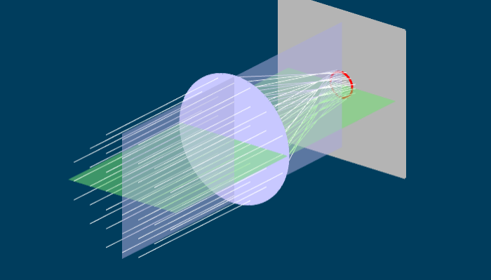
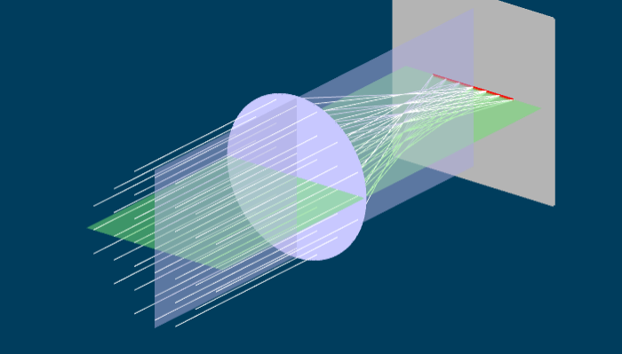

So far we’ve been thinking about lenses as if they were two-dimensional objects, as shown in the ray diagram in Figure 1. What we’re really doing, though, is looking at a two-dimensional cross-section of a three dimensional lens. That’s fine for spherical lenses, because all cross sections through the centre of a spherical lens are the same. No matter which cross-section we consider, the power is the same. (You can see this by dragging Figure 1 to view the actual 3D lens from different directions.)
Not all lenses are spherical. In some lenses, the cross-sections are all different. In this case, we have to work out what happens with the lens one cross-section at a time, if possible. The first problem we face is that if the lens isn’t spherical, the cross-sections aren’t circles, and so we can’t even begin to work out the power of the lens in each cross-section, because the formula for surface power (and the paraxial equation) assumes that the surfaces are circular.
However, some non-spherical lenses have some circular cross-sections. These are called toric lenses (so called because the lens is shaped like a slice from a torus, which is a donut or barrel shaped object, see Figure 2). A toric lens has two cross-sections which are exactly circular. These two cross-sections are called the principal meridians, and are always at right angles to one another. These are the only cross-sections of the lens where the paraxial equation or the thin lens equation is valid. However, if we figure out what happens on these particular cross-sections, we can figure out what the image formed by the lens looks like.
A toric shaped glass lens, like the one in Figure 2, has two principal meridians with radii of 0.25m and 0.1m. What are the surface powers along these meridians?
Assuming the refractive index of glass is 1.5, the surface powers along the two meridians are \((1.5-1)/0.25=+2\text{D}\), and \((1.5-1)/0.1=+5\text{D}\).
If we know the powers of the lens along the principal meridians, we can use the thin lens equation to work out the position of the image along each meridian, or cross-section:
A toric lens has a power of \(+2\text{D}\) along one principal meridian, and \(+5\text{D}\) along the other principal meridian. An object is placed \(45\text{cm}\) in front of the lens. Where do the images form?
The only way to answer this question is to work with each meridian (cross-section) separately. For the first meridian with power \(+2\text{D}\), the thin lens equation says that \(V_{out}=1/(-0.45)+2=-0.222\text{D}\), so the image forms at a distance of \(1/(-0.222)=-4.5\text{m}\) from the lens. That is, it is a virtual image, \(4.5\text{m}\) to the left of the lens.
For the second meridian with power \(+5\text{D}\), \(V_{out}=1/(-0.45)+5 = 2.778\text{D}\), so the image forms at a distance of \(1/2.778=0.36\text{m}\) from the lens. This is a real image to the right of the lens.
Clearly, this lens cannot form a sharp image of the object, since there is no way the image can be both virtual and real, and in two different places at once. Instead, the image formed by this lens is always going to be blurred. Lenses such as toric lenses are called astigmatic1 lenses. An astigmatic lens never produces a sharp image.
Astigmatic lenses never form sharp images, but the images they do form are blurred in very specific ways. In this section we'll look at the kinds of blur created by astigmatic lenses.
Figure 3 shows a side view of an astigmatic lens. Like the lens in Figure 1, two planes have been picked out. Because Figure 3 is a side view, we can see the blue vertical plane. Parallel light enters the lens from the left, and is focused to a point where the image screen is. From this view, it looks like the astigmatic lens actually forms a sharp image, but this isn't the case. If you take the "Rotate lens" slider and move it, you will see that the rays spread out. Once the rotation is fully complete, we are looking down on the lens, (so we see the green horizontal plane) and the light is focusing at a totally different place from the original side view.
If you grab and drag the lens you can see what is happening in three dimensions. The parallel light entering the lens is refracted in all sorts of different directions, to form a complex web of rays leaving the lens. However, by moving the image screen (using the slider) we can see three specific images which have a simple shape. When the image screen is left at it's original position, the light is focused into a line, shown in red. If you grab the "Move screen" slider, you can move the screen closer until the light focuses into another line, which is rotated 90 degrees from the original one. Somewhere in between these two positions, the light rays form a circular blur. If you rotate the lens, the line images rotate with it.
How do these line images get formed? Consider the furthest line image in Figure 3, and begin by hitting the reset button to see the lens side on. In this case, all the light rays are focused vertically (in the blue plane) and so appear to come to a point. However, if we then rotate the lens (using the slider) we can see that in the green plane (horizontally) the rays are spread out. If the rays are squeezed vertically, but spread horizontally, we get a horizontal line. A similar argument holds for the closer line image. In this case, the rays are focused (or squeezed) horizontally, but still spread out vertically. Thus one gets a vertical line image.
Somewhere between the two line images, the light is equally focused (or unfocused) in all directions. In that case, the light forms a circular blur pattern. This circular blur is called the circle of least confusion2.
Take an astigmatic lens like the one in Figure 3. This lens has two principal meridians, which we will call the "blue" and "green" meridians, because in Figure 3 the blue and green planes are drawn through them. The principal meridians are at right angles to one another.
An astigmatic lens has two powers, one for each principal meridian. Suppose the powers of the lens are \(F_b\) in the "blue" meridian and \(F_g\) in the "green" meridian. We can work out what happens to light entering the lens by first working out what happens in each meridian. An example will show how this works.
Now consider the "green" meridian. Again, the thin lens equation holds, but with power \(F_g\) so the thin lens equation is \(V_{in}+F_g=V_{out}\). From this, \(V_{out}=-3.33+9=5.667\text{D}\), and so the image forms \(1/5.667 = 0.176\text{m}\) from the lens. This image is sharp in the "green" plane, but blurred out in the "blue" plane, so another line image forms here.
The last thing we are interested in is where the circle of least confusion forms. We can use the blur formulas given in chapter 6 to do figure this out. Recall that the blur formula says that if a screen is placed a distance \(d\) from a lens with power \(F\) and aperture \(a\), the angular diameter of the blur circle is given by
A toric lens has two powers \(F_b\) and \(F_g\), so will have two \(V_{out}\) values, one in each principal plane. Let \(V_{out,b}\) and \(V_{out,g}\) be the values of the vergence actually leaving the lens in the two planes. The width of the blur in the "blue" plane is
Line images occur when \(V_{need}=1/d\) equals either \(V_{out,b}\) or \(V_{out,g}\), because then one of the blur widths is zero. In between these two line images, there is a place where the blur is completely circular. For a circle, the blur must be the same in both planes, so
This happens when \(V_{need}=1/d = (V_{out,b}+V_{out,g})/2\).
A toric lens has a power of \(+2\text{D}\) along one principal meridian, and \(+5\text{D}\) along the other principal meridian. An object is placed \(45\text{cm}\) in front of the lens. Where does the circle of least confusion form?
When \(V_{in}=0\), as with a distant object, the vergences in the two meridional planes are just \(V_{out,b}=F_b\) and \(V_{out,g}=F_g\). In that case, the circle of least confusion occurs at a distance \(d\) given by \(1/d = (F_b+F_g)/2\). The average of the two powers, \((F_b+F_g)/2\) is called the equivalent sphere, the idea being that the equivalent sphere is the power of a spherical lens that is the most similar to the astigmatic lens.
Consider what happens when we try and form an image using a toric lens. First, put the image screen so that we form a vertical line image from a distant point. This is shown in the top left of Figure 4. The image is focused horizontally, but blurred vertically. Next, put the screen so that we form a horizontal line image of a distant point. This is shown in the bottom left of Figure 4. Here the image is focused vertically, but blurred horizontally. Finally, if we place the image screen where the circle of least confusion is, we get an image which is blurred equally in all directions (Figure 4, centre row)
|  | |
|  |
The main reason we are interested in astigmatism is because the human eye sometimes suffers from it. Astigmatism in the human eye can be caused by an astigmatic cornea or an astigmatic crystalline lens. If the lens is astigmatic, the amount of astigmatism may vary with accommodation. Astigmatism can also be combined with spherical refractive error such as myopia or hyperopia.
The principal meridians of astigmatism in humans are often close to horizontal or vertical. Human astigmatism is classified as follows (see also Figure 5):
When the principal meridians are vertical and horizontal, the astigmatism is subdivided into:
With-the-rule astigmatism: the horizontal meridian has the least power and the vertical meridian has the most focal power.
Against-the-rule astigmatism: the vertical meridian has the least power and the horizontal meridian has the most focal power.
The second case is where the meridians are at some other angle. This is called oblique astigmatism.
There is a third case, irregular astigmatism, caused by much more distorted cornea or lens shapes that aren’t even approximately toric. While this kind of astigmatism can’t be readily analyzed in terms of the principal meridians we’ve used above, it is still considered astigmatism because no clear (i.e. point-like or stigmatic) image of a point object can be produced by the eye. You can get this kind of astigmatism following injury to the cornea, eye surgery, or in keratoconus (a disease which causes thinning of the cornea).
Astigmatism can also be “combined” with myopia or hyperopia, by which we mean that the equivalent sphere is myopic or hyperopic. The degree of spherical error leads to a classification of astigmatism into five types, which is useful when correcting astigmatism during subjective refraction:
The myopia is so great that both line images are entirely in front of the retina. This is called compound myopic astigmatism.
The myopia is a little less so the furthest line image just touches the retina and the rest is in front of the retina. This is called simple myopic astigmatism.
The myopia or hyperopia is small enough that one line image forms in front of the retina, another behind it. This is called mixed astigmatism.
The hyperopia is enough that only the closest line image touches the retina, and the rest falls behind the retina. This is called simple hyperopic astigmatism.
The hyperopia is large enough that both line images are entirely behind the retina. This is called compound hyperopic astigmatism.
An astigmatic eye is corrected by using an astigmatic spectacle lens. The spectacle lens has its principal meridians at the same angle as the principal meridians of the astigmatic eye. The astigmatic spectacle lens corrects the refractive error on each of the meridians.
A with-the-rule astigmatic hyperope has ocular refractions along the meridians of \(+2\text{D}\) and \(+3\text{D}\). If spectacles are placed at a distance of \(15\text{mm}\), what are the spectacle powers?
The spectacle powers are calculated along each meridian seperately. A "with-the-rule" astigmatic eye has the vertical meridian with the most power. Thus the ocular refraction vertically is \(+2\text{D}\) and the ocular refraction horizontally is \(+3\text{D}\). (The ocular refraction of a hyperope says how much extra power is needed for them to see clearly. Since the vertical meridian requires less extra power, it has the most power.)
Along the horizontal meridian, the spectacle focal length is \(1/3+0.015 = 0.348\text{m}\), so the spectacle power is \(1/0.348=+2.87\text{D}\). Along the vertical meridian, the spectacle focal length is \(1/2+0.015=0.515\text{m}\), so the spectacle power is \(+1.94\text{D}\).
An astigmatic lens has two principal meridians and two powers. One way of representing this is by a power cross. This is a circle with two lines, representing the principal meridians of the astigmatic lens, with their powers written beside them. Examples of power crosses for both an astigmatic lens and a spherical lens are shown in Figure 6.
If two lenses are close together, their powers simply add up. This idea allows us to break up an astigmatic lens into a sum of simpler lenses. There are two ways of doing this: an astigmatic lens can be broken up into two cylindrical lenses, or it can be broken up into a sum of a spherical and a cylindrical lens.
A cylindrical lens is an extreme form of astigmatic lens where there is no power on one of its meridians(e.g. either \(F_g=0\) or \(F_b=0\) on one of the meridians). This kind of lens is curved in one direction, but flat in the other. The power cross for a cylindrical lens is shown in Figure 7.
Any power cross for an astigmatic lens can be broken up into a sum of two cylindrical lenses. This is termed a crossed-cylinder representation. A crossed-cyl representation of an astigmatic lens is shown in Figure 8. Another way of describing astigmatic lenses is to break them up into a sum of a spherical lens and a cylindrical lens. This is the form used most often by optometrists. Two examples of a sphere-cyl representation are shown in Figure 9. The top row shows a plus cylinder representation, and the bottom row shows a minus cyl representation.
The sphere-cyl form is always abbreviated. For example, the sphere-cyl form for the lens on the top row of Figure 9 is +5DS/+3DCx130, which means a spherical lens (that’s the +5DS part) with an added positive cylindrical lens (that’s the +3DC part), whose axis is oriented at 130 degrees. The axis of the cylinder is the meridian that has no power. The orientation of the axis is taken counterclockwise from horizontal. Note that if the axis is horizontal, this is given as 180 degrees, and never zero. The sphere-cyl form for the lens on the bottom row is +8DS/-3DCx40. Both lenses are. of course, the same; the difference between the two sphere-cyl forms is just whether one uses a positive or negative cylinder.
If we look more carefully at spherical lenses, we find that they too suffer from a kind of astigmatism, called oblique astigmatism. Figure 10 shows a lens with two parallel beams of light going through it. Both parallel beams are focussed at the same horizontal distance from the lens, so both focus to a point on a vertical image screen.
Remember that the focal length is the distance from the lens to the image when parallel light enters the lens. For the horizontal (green) rays, the focal length is shorter than for the oblique (blue) rays. This means that the power of the lens (i.e. one over the focal length) depends on which angle the rays strike it.
This isn’t a problem in two dimensions, but it becomes one in three dimensions. Figure 11 shows two spherical lenses. On the left, a beam of parallel light strikes the lens at 90 degrees. Light in two planes (blue and green) are shown. Because the light strikes the lens at the same angle in both planes, it is focussed to the same point in both planes, and a point image is formed.
On the right, the lens has been turned slightly. In the vertical (green) plane, the light still strikes the lens at right angles, and so the light continues to be focused to the same point as before. However, the light in the horizontal plane (blue) is now striking the lens obliquely. As shown in Figure 10, this means it focuses to a point which is further away. The two focal points lead to astigmatism (compare Figure 11 and Figure 10).
While the lens was turned in Figure 11, in real situations, any lens will encounter light beams coming at it from all angles. Beams that strike the lens at an oblique angle will behave just like the beam shown in Figure 11, right hand side. The cure for oblique astigmatism is to design the lens so that it has the same focal length regardless of the angle the beam of light strikes it. Then a sharp image will form on a spherical surface behind the eye, rather than on a flat surface. The human eye does this to some extent. The retina, where the image forms, is curved. However, the sharp image formed by the eye is on a curved surface which is a bit more curved than the retina, leading to blur away from the optic axis.
The word astigmatic means “not a point”; stigmatic means point-like, and the prefix a- negates that↩
“Circle of Least Confusion” is an odd term. The circle part is obvious enough, but what does “confusion” mean? The idea is that if light doesn’t come to a point, it is “confused” and spreads out. The amount of “confusion” relates to how far the light spreads from the point. "Least confusion" means that the light spreads the minimum from a point image.↩